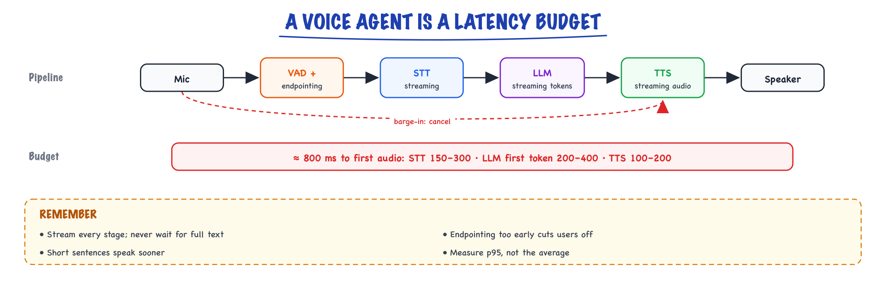
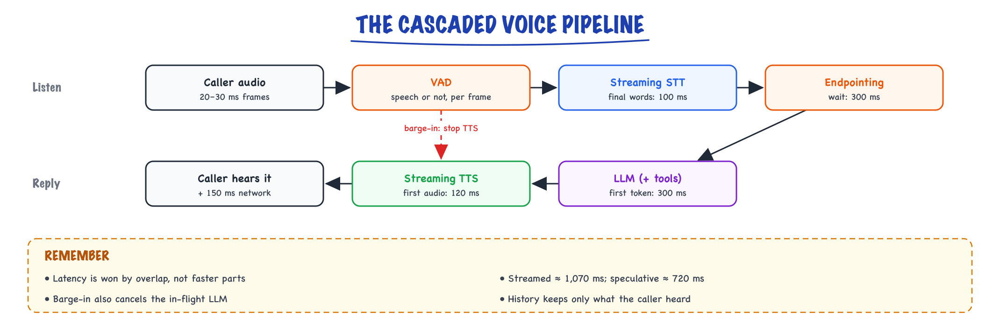

Voice agents // Stretch: voice & multimodal
STT, TTS, VAD, barge-in and the latency budget of a real-time voice agent.
01 — At a glance

Streaming end to end: detect speech, transcribe, think, speak. Barge-in cancels speech and generation the moment the user talks over the bot.
02 — New words
| Word | Meaning |
|---|---|
| Voice-to-voice latency | Time from the moment the caller stops speaking to the moment they hear the agent start. The number that decides whether the agent feels natural. |
| Cascaded pipeline | Speech-to-text, then a text LLM, then text-to-speech, each a separate model, streaming into the next. |
| Speech-to-speech model | One model that takes audio in and produces audio out, without an explicit text step in between. |
| VAD | Voice activity detection: deciding, frame by frame, whether the audio contains speech. |
| Endpointing | Deciding that the caller has finished their turn, as opposed to pausing mid-sentence. |
| Partial / final transcript | Streaming speech-to-text emits provisional words while the caller talks (partials) and a corrected version once a segment ends (final). |
| WER | Word error rate: substitutions plus deletions plus insertions, divided by the number of words actually spoken. |
| TTFA | Time to first audio: how long text-to-speech takes to produce the first playable audio for a piece of text. |
| Barge-in | The caller speaking over the agent. The agent must stop talking and listen. |
| Echo cancellation | Removing the agent's own voice from the incoming audio, so it does not hear itself as the caller. |
| Frame | A short slice of audio, typically 20 milliseconds, the unit in which audio is streamed and analysed. |
| Erlang | A unit of telephone traffic: one line continuously busy. Average concurrent calls = calls per hour × hours per call. |
| VAD / endpointing | Detecting speech / deciding the speaker finished (voice agents). |
| STT / TTS | Speech-to-text / text-to-speech; the voice agent’s I/O layer. |
The lesson
03 — The question
A text chatbot can take three seconds to answer and nobody minds. On a phone call, three seconds of silence feels like the line dropped. In conversation, people typically start replying within a few hundred milliseconds of the other person finishing (gaps on the order of 200 milliseconds are common across languages), and pauses beyond about a second feel awkward. A voice agent is therefore an LLM application with a latency budget an order of magnitude tighter than chat, plus problems text never has: deciding when someone has finished talking, being interrupted, and mishearing.
The interview questions:
- Walk through the pipeline. Where does the latency go, and how do you get under a second?
- How does the agent know the caller has finished speaking? What is the trade-off?
- What happens when the caller interrupts?
- Cascaded or speech-to-speech? How do you evaluate a voice agent, and what does a minute cost?
The running example. Brightsmile, a chain of dental clinics, puts an agent on its phone line to handle bookings. A caller says: "Hi, I'd like to move my cleaning on Thursday to next week, um, maybe Tuesday afternoon?" The agent must understand this, call a list_slots tool, offer options, handle being interrupted, and confirm the change. About 600 calls an hour arrive at peak, averaging 3 minutes. We follow one turn of this call through every stage, in milliseconds.
04 — Step 1: audio is a stream of small frames
Everything in a voice agent operates on audio frames, usually 20 milliseconds each. What a frame contains depends on the transport:
| Transport | Format | Per 20 ms frame | Bit rate |
|---|---|---|---|
| Phone line (PSTN, via a telephony provider) | 8 kHz, 8-bit μ-law | 160 samples, 160 bytes | 64 kbit/s |
| Browser or app (WebRTC) | 16 kHz, 16-bit PCM (often compressed with Opus in transit) | 320 samples, 640 bytes | 256 kbit/s uncompressed |
The phone line matters more than it looks. Sampling at 8 kHz can only represent frequencies up to 4 kHz, and the traditional telephone band is roughly 300 to 3,400 Hz. Consonants like "s", "f" and "th" carry much of their energy above that, which is why "Tuesday" and "two stay" are harder to tell apart on a phone call than in person. Speech models are usually trained mostly on 16 kHz audio; upsampling phone audio to 16 kHz changes the format but cannot restore the lost frequencies. Expect higher error rates on telephony, and prefer speech-to-text models or settings tuned for it.
Frames arrive continuously, in both directions, over a long-lived connection (a WebSocket from the telephony provider, or WebRTC). The agent is not a request-response service; it is a set of concurrent streams.
05 — Step 2: the pipeline and its latency budget
The cascaded pipeline, which most production voice agents use:

Caller audio flows through VAD, streaming STT and endpointing to the LLM, then streaming TTS back to the caller. If the caller speaks while the agent talks, barge-in stops the audio and cancels generation.
Now put illustrative but realistic numbers on each stage of one turn, measured from the moment the caller stops speaking:
| Stage | Time | What it is |
|---|---|---|
| Endpoint wait | 300 ms | Silence needed before deciding the turn is over (Step 4) |
| STT final | 100 ms | Streaming STT finalising the last words after the endpoint |
| LLM time to first token | 300 ms | Network plus prefill of the prompt and history |
| First sentence | 100 ms | About 10 tokens at 100 tokens per second |
| TTS time to first audio | 120 ms | Synthesising the start of the first sentence |
| Network and telephony | 150 ms | Both directions, carrier plus internet |
How these combine depends entirely on whether each stage waits for the previous one to finish or only to start:
- Sequential (batch STT on the whole utterance, wait for the full 40-token reply, synthesise all of it, then play): \(300 + 400 + 300 + 400 + 600 + 150 = 2{,}150\) ms. Unusable.
- Streamed (each stage starts on the first output of the previous): \(300 + 100 + 300 + 100 + 120 + 150 = 1{,}070\) ms. Workable, slightly slow.
- Speculative: start the LLM on the partial transcript as soon as silence begins (about 50 ms in), in parallel with the endpoint wait. The first sentence is ready at \(50 + 300 + 100 = 450\) ms; if the endpoint confirms at 300 ms and the transcript did not change, TTS starts at 450 ms, first audio at 570 ms, and the caller hears it at 720 ms. If the caller resumes speaking, the speculative response is thrown away.
The lesson in those three numbers: latency is won by overlap, not by faster components. Every stage that waits for a complete input instead of a first chunk adds its whole duration. After overlap, the biggest remaining items are the endpoint wait and the LLM's time to first token, and those are the next two steps.
06 — Step 3: VAD, is anyone speaking?
Voice activity detection labels each frame as speech or not. The simplest method thresholds the frame's energy; it fails on background noise (a dental clinic's waiting room, a car). Modern agents use a small neural VAD that outputs a speech probability per frame, run on every 20 to 30 ms frame at negligible cost.
Raw frame decisions flicker, so VAD output is smoothed: speech "starts" after several consecutive speech frames (so a cough or a click does not count), and "stops" after a run of non-speech frames. VAD answers "is there speech right now?". It does not answer "has the caller finished?", which is a different and harder question.
07 — Step 4: endpointing, the trade-off at the heart of turn-taking
People pause mid-sentence. The Brightsmile caller pauses after "next week, um," while deciding. If the agent treats every silence longer than \(T\) milliseconds as the end of the turn, it faces a direct trade-off: a short \(T\) responds fast but cuts callers off; a long \(T\) waits politely and feels sluggish, because \(T\) is added to every single turn.
Put numbers on it. Suppose mid-turn pauses follow a log-normal distribution with a median of 250 ms (a synthetic but plausible shape: most pauses short, a long tail of thinking pauses), and a typical turn contains two of them. A turn is cut off if either pause exceeds \(T\):
| Threshold \(T\) | Pauses longer than \(T\) | Turns cut off (2 pauses) | Added to every turn |
|---|---|---|---|
| 300 ms | 38.2% | 61.8% | 300 ms |
| 500 ms | 12.4% | 23.2% | 500 ms |
| 800 ms | 2.6% | 5.2% | 800 ms |
No fixed threshold is good: 800 ms is polite and slow, 300 ms is fast and constantly interrupts. The fix is to use what was said, not just the silence. Semantic endpointing looks at the transcript: "maybe Tuesday afternoon?" reads as complete; "I'd like to move my cleaning on Thursday to" does not. A small model or classifier (some speech-to-text providers build one in) estimates completeness, and the wait adapts: 300 ms when the turn looks complete, 1,000 ms when it does not.
Assume the classifier marks 85% of real turn ends as complete and 90% of mid-turn pauses as incomplete. Then the average wait is \(0.85 \times 300 + 0.15 \times 1{,}000 = 405\) ms, and about 9.3% of turns get cut off. Compared with a fixed 500 ms threshold, that is both faster (405 versus 500 ms) and far less rude (9.3% versus 23.2%). Being cut off is also recoverable: the caller keeps talking, which triggers barge-in (Step 8), and the agent stops. The cost is awkwardness, not a failed call, which is why systems lean toward responding fast.
08 — Step 5: streaming speech-to-text, and errors that matter
Streaming STT emits partial transcripts every few hundred milliseconds while the caller speaks ("move my cleaning on", "move my cleaning on Thursday to…") and a final transcript, with corrections, when a segment ends. Partials let the system start work early (the speculative LLM call in Step 2, or a semantic endpointing check); finals are what you act on. The "STT final" cost in the budget is only the time to finalise the last few words after the endpoint, because everything before was transcribed while the caller was still talking.
Recognition quality is measured by word error rate: the minimum number of word substitutions, deletions and insertions needed to turn the transcript into what was actually said, divided by the number of words said. For the Brightsmile caller on a noisy phone line:
said: move my cleaning on thursday to next tuesday afternoon
heard: move my cleaning on thursday to next to stay afternoon
^^ ^^^^
1 substitution (tuesday -> to) + 1 insertion (stay) = 2 errors / 9 words = 22.2% WER
22% sounds bad, but the deeper problem is which word was lost: the one entity the whole request depends on. WER weights "um" and "Tuesday" equally; your task does not. Three practical responses:
- Measure entity accuracy (dates, times, names, numbers) separately from overall WER.
- Bias the recogniser toward expected vocabulary: weekday names, clinic locations, dentists' names, using the keyword or phrase hints most STT services offer.
- Confirm critical values by reading them back: "Tuesday the 14th at 2:30, is that right?" A confirmation turn costs a few seconds and prevents a wrong booking. Design it into the dialogue for every action that changes something.
09 — Step 6: the LLM, under a latency budget
The LLM stage is an ordinary agent (see The agent loop and Tool calling) with three voice-specific constraints.
Time to first token is the budget. It is mostly network plus prefill, and prefill grows with prompt length. A 3-minute call accumulates history every turn (see Calling a model), so keep the system prompt short, cache its static prefix, trim history, and choose a fast model. Voice agents typically use smaller, faster models than chat assistants for the conversational turn, and hand harder reasoning to a tool or a background call.
Tool calls add a round trip mid-turn. When the caller asks for Tuesday afternoon, the model must call list_slots, wait for the result, and call the model again. That can add 500 ms to over a second. Two standard mitigations: have the agent say a short acknowledgement first ("Let me check Tuesday afternoon for you.") so the line is not silent while the tool runs, and make the tools fast (a cached availability lookup, not a slow scheduling API on every call).
Write for the ear. The output is spoken, so the prompt must ask for short sentences, one question at a time, no lists or Markdown, and numbers in speakable form. Long answers are worse on the phone than on screen: the caller cannot skim, and the longer the agent talks, the more likely an interruption.
10 — Step 7: streaming text-to-speech
TTS turns text into audio. The latency that matters is time to first audio, and it depends on how text is fed in. Waiting for the LLM's whole reply wastes the 400 ms of generation; feeding single tokens produces poor intonation, because speech prosody depends on the whole phrase. The usual compromise is sentence or clause chunking: buffer LLM output until a sentence boundary (or a comma, for a fast start), send that chunk to TTS, and play its audio while the next chunk is generated. Keep the agent's first sentence short ("Sure, let me check.") so the first chunk is ready quickly.
TTS also needs text normalisation: "2:30pm" must be spoken as "two thirty p m", "Dr. Okafor" as "Doctor Okafor", and "14/05" as a date in the caller's locale. Either instruct the LLM to write in spoken form or normalise before synthesis; do not leave it to chance, because a mispronounced time is a wrong time.
11 — Step 8: barge-in, and keeping history honest
The agent is offering: "I have Tuesday at two thirty or at four fifteen. Which works better for you?" After 1.6 seconds, the caller cuts in: "Is there anything later?" The agent must:
- Detect speech during playback. This requires echo cancellation, because the microphone or phone line also carries the agent's own voice back; without it, the agent interrupts itself. Phone networks and WebRTC stacks provide some echo cancellation; it is not perfect, so VAD thresholds during agent speech are often set higher.
- Stop quickly. Halt TTS playback and flush any queued audio within a couple of hundred milliseconds, and cancel the in-flight LLM generation so it does not keep talking.
- Distinguish interruptions from backchannels. "Mm-hm" and "okay" while the agent talks usually mean "go on", not "stop". Requiring a minimum speech duration or a few transcribed words before treating it as barge-in avoids stopping for every murmur.
- Record what was actually heard. This is the step most implementations get wrong. The LLM generated the whole sentence, but the caller heard only part of it. With word timings from TTS (each word here lasting about 0.38 s), the words finished by 1.6 s are "I have Tuesday at". The conversation history must store
"I have Tuesday at [interrupted]", not the full reply.
Why the last point matters: if the history says the agent offered both times, the model reads "anything later?" as a rejection of 4:15 too and offers Wednesday, skipping the slot the caller never heard and would have taken. With the honest history, the model sees that it got no further than "Tuesday at" and replies "Yes, four fifteen on Tuesday. Would that work?" Honest history makes the model reason about what the caller actually knows.
12 — Step 9: cascaded or speech-to-speech
Speech-to-speech models take audio in and produce audio out in one model, often through realtime APIs. They avoid the text bottleneck (so they hear tone and hesitation and can respond with natural prosody) and remove the hand-offs between stages, which lowers latency. The cascaded pipeline keeps text at every seam, and that is its strength: you can log and search transcripts, apply guardrails and redaction on text, swap the STT, LLM or TTS vendor independently, use your full tool-calling agent, and evaluate each stage separately.
The decision usually follows the product. For a booking line with tools, confirmations and audit needs, like Brightsmile, cascaded is the safer default. For companionship, language practice or concierge experiences where how something is said is the product, speech-to-speech is compelling. Hybrids exist too: a speech-to-speech model for the conversational surface, delegating actions to a text agent through tools.
13 — Step 10: capacity, cost and evaluation
Capacity. 600 calls an hour averaging 3 minutes is \(600 \times 3/60 = 30\) Erlangs: 30 calls in progress on average at peak, each holding open audio streams, an STT session, a TTS session and a conversation. Provision above the average (calls cluster), and check your STT, TTS and LLM providers' concurrency limits, not just their rate limits.
Cost per minute, with illustrative prices: STT at $0.006 per audio minute; TTS for about 450 spoken characters per minute at $30 per million characters, $0.0135; an LLM handling 6 turns a minute at about 2,000 input and 40 output tokens per turn, at $1 and $5 per million, $0.0132; telephony at $0.01. Total about $0.043 per minute, or about 13 cents for a 3-minute call. The LLM share grows quickly with long system prompts and long calls, because every turn resends the history; prompt caching matters here as much as in chat.
Evaluation needs more than transcript accuracy:
- Latency percentiles, measured voice-to-voice from recordings: p50 and p95, never just the mean. One 3-second silence per call ruins the experience even if the average is fine.
- Endpointing quality: the rate at which the agent talks over callers, and the rate of awkward long silences.
- Recognition: WER on your own call audio, and entity accuracy on dates, times and names.
- Task success: was the appointment moved to the time the caller wanted, verified against the booking system.
- Simulated callers: scripted or LLM-driven callers with synthesised voices, accents, background noise, pauses and interruptions, run against every change before real callers hear it. Evaluation design in general is in Evaluating LLM features.
14 — The worked example: one turn, millisecond by millisecond
t (ms) event
-4000 caller starts: "Hi, I'd like to move my cleaning on Thursday to next week, um,
maybe Tuesday afternoon?" Partials stream throughout.
-1900 450 ms pause after "um": semantic endpointing sees an incomplete sentence, waits.
0 caller stops speaking.
50 VAD reports silence; LLM starts speculatively on the partial transcript.
300 transcript reads as complete; endpoint confirmed, partial unchanged: keep speculation.
350 first LLM token: "Sure,"
450 first sentence ready: "Sure, let me check Tuesday afternoon." -> TTS
570 first audio produced
720 caller hears "Sure, let me check..." (voice-to-voice: 720 ms)
~ meanwhile the model calls list_slots(day="Tuesday", after="12:00"), 400 ms
2600 agent: "I have Tuesday at two thirty or at four fifteen..."
4200 caller barges in: "Is there anything later?" TTS stopped, history records
"I have Tuesday at [interrupted]".
agent: "Yes, four fifteen on Tuesday. Would that work?" caller: "Perfect."
agent: "Tuesday the fourteenth at four fifteen. Shall I confirm that?"
Every technique in the lesson appears: semantic endpointing avoided cutting the caller off at the "um"; speculation and streaming produced a 720 ms reply; a short acknowledgement covered the tool call; barge-in stopped the agent and kept the history honest; and a read-back confirmation guarded the one value that matters.
15 — In code: the arithmetic of a voice agent
import numpy as np # 1. Audio as bytes: 20 ms frames on a phone line versus wideband WebRTC. for name, rate, bytes_per_sample in [("phone, 8 kHz mu-law", 8000, 1), ("WebRTC, 16 kHz PCM16", 16000, 2)]: samples = rate * 20 // 1000 print(f"{name}: {samples} samples = {samples * bytes_per_sample} bytes per frame, " f"{rate * bytes_per_sample * 8 // 1000} kbit/s") # 2. The latency budget for one turn, in ms after the caller stops speaking. endpoint, stt_final, ttft, first_sentence, tts_first_audio, network = 300, 100, 300, 100, 120, 150 reply_tokens, tok_per_s, reply_audio_synth = 40, 100, 600 sequential = (endpoint + 400 # batch STT on the whole utterance + ttft + reply_tokens / tok_per_s * 1000 # wait for the whole reply + reply_audio_synth + network) # synthesise all of it, then play streamed = endpoint + stt_final + ttft + first_sentence + tts_first_audio + network speculative = max(50 + ttft + first_sentence, endpoint) + tts_first_audio + network print(f"sequential {sequential:.0f} ms, streamed {streamed} ms, speculative {speculative} ms") # 3. Endpointing: how often does a silence threshold cut a caller off mid-sentence? rng = np.random.default_rng(0) pauses = rng.lognormal(mean=np.log(250), sigma=0.6, size=200_000) # synthetic mid-turn pauses, ms for threshold in (300, 500, 800): q = (pauses > threshold).mean() # one pause exceeds the threshold per_turn = 1 - (1 - q) ** 2 # turns with two pauses print(f"threshold {threshold} ms: {q:.1%} of pauses, {per_turn:.1%} of turns cut off") # Semantic endpointing: wait 300 ms if the transcript reads as complete, 1,000 ms if not. # Assume mid-turn pauses look incomplete 90% of the time and real turn ends look complete 85%. q = 0.9 * (pauses > 1000).mean() + 0.1 * (pauses > 300).mean() print(f"semantic: {1 - (1 - q) ** 2:.1%} of turns cut off, mean wait {0.85 * 300 + 0.15 * 1000:.0f} ms") # 4. Word error rate: edit distance over words, divided by reference length. def wer(ref, hyp): r, h = ref.split(), hyp.split() d = np.zeros((len(r) + 1, len(h) + 1), dtype=int) d[:, 0], d[0, :] = range(len(r) + 1), range(len(h) + 1) for i in range(1, len(r) + 1): for j in range(1, len(h) + 1): d[i, j] = min(d[i - 1, j] + 1, d[i, j - 1] + 1, d[i - 1, j - 1] + (r[i - 1] != h[j - 1])) return d[-1, -1] / len(r) ref = "move my cleaning on thursday to next tuesday afternoon" hyp = "move my cleaning on thursday to next to stay afternoon" print(f"WER {wer(ref, hyp):.1%}") # 5. Barge-in: keep only the words the caller actually heard before interrupting. reply = "I have Tuesday at two thirty or at four fifteen. Which works better for you?" words = reply.split() word_end_s = np.cumsum([0.38] * len(words)) # word end times reported by the TTS heard = [w for w, t in zip(words, word_end_s) if t <= 1.6] # caller spoke at 1.6 s print(" ".join(heard) + " [interrupted]") # 6. Capacity and cost per minute (all prices illustrative). calls_per_hour, minutes_per_call = 600, 3 print("concurrent calls:", calls_per_hour * minutes_per_call / 60) stt = 0.006 # $ per audio minute tts = 450 * 30 / 1e6 # 450 characters spoken per minute at $30 per million llm = 6 * (2000 * 1 / 1e6 + 40 * 5 / 1e6) # 6 turns a minute, 2,000 in / 40 out tokens per turn phone = 0.01 print(f"$ per minute: stt {stt:.4f} tts {tts:.4f} llm {llm:.4f} phone {phone:.4f} " f"total {stt + tts + llm + phone:.4f}")
It prints the frame sizes from Step 1, the 2,150 / 1,070 / 720 ms budgets from Step 2, the endpointing table and the semantic-endpointing result (9.3% cut off, 405 ms average wait) from Step 4, the 22.2% WER from Step 5, the truncated history line from Step 8, and the 30 concurrent calls and $0.0427 per minute from Step 10. In a real system, frameworks such as Pipecat or LiveKit Agents provide the streaming plumbing (transports, VAD, interruption handling) and you supply the agent logic; these numbers are what you tune inside them.
More detail
16 — Voice AI agents — agents with a latency budget
A voice agent is everything from Tool calling, Tools & agents, Multi-agent systems plus a real-time audio layer where latency is the product. The agent logic transfers; the streaming discipline is new.
Here's the reframe that makes voice tractable: you are not building new AI. The loop, tools, memory, and guardrails from Tool calling, Tools & agents, Multi-agent systems carry over unchanged. What's new is that your agent now lives inside a real-time audio pipeline where a human's conversational instincts grade you continuously: a 300 ms pause reads as attentive, an 1,200 ms pause reads as broken, and interrupting someone mid-sentence reads as rude. Text agents get judged on answers; voice agents get judged on answers and timing, and timing fails first.
17 — The pipeline (cascaded — the production default)
phone/mic audio ─► VAD (is someone speaking?) ─► streaming STT (partial transcripts)
─► endpointing (did they finish?) ─► LLM agent (tools, memory, guardrails)
─► streaming TTS ─► audio out
[barge-in: user speaks over the bot → cancel TTS + generation]
Alternative: speech-to-speech models (one model, audio in → audio out — realtime APIs). Lower latency, natural prosody; less controllable/toolable. Cascaded remains the default where tools, guardrails, and auditability matter.
| Dimension | Cascaded (VAD→STT→LLM→TTS) | Speech-to-speech (realtime APIs) |
|---|---|---|
| Latency floor | ~500–800 ms (sum of stages, streamed) | ~300–500 ms (one model, no glue) |
| Prosody / naturalness | TTS voice; emotion mostly lost through the text bottleneck | Hears tone, hesitation, sarcasm; can laugh, whisper, match energy |
| Tool use & agent logic | Full Tool calling, Tools & agents, Multi-agent systems toolkit; the LLM step is just your agent | Supported but younger; long multi-tool chains harder to steer |
| Guardrails & auditability | Text at every seam — you can inspect, filter, log, redact between stages | Audio in, audio out; the transcript is a byproduct, checks are post-hoc |
| Component control | Swap STT/TTS/LLM independently; per-stage tuning and fallbacks | One vendor, one knob; quality moves when their model moves |
| Cost profile | Sum of three metered services; each has cheap tiers | Realtime audio-token pricing, typically premium (assume ~2–5× cascaded; illustrative) |
| Choose when | Regulated domains, tool-heavy tasks, IVR/telephony, need for evals on every stage | Companionship/concierge UX, latency-critical, light tool use, prosody is the product |
18 — The latency budget — the whole game
human conversational gap ≈ 200–500 ms; > ~800 ms total feels broken. VAD/endpoint ~50–200 ms STT finalize ~100–300 ms LLM TTFT ~200–400 ms ← why you use a FAST model + prompt caching + short system prompts TTS first byte ~100–200 ms and EVERYTHING must stream: partial STT → start the LLM early; stream LLM tokens → start TTS on the first sentence, not the full reply.
Do the arithmetic on the budget (all figures illustrative but realistic): worst case above is 200+300+400+200 = 1,100 ms — already broken. The wins come from overlap, not faster components. Streaming STT emits partials while the user is still talking, so "STT finalize" costs only the tail after endpoint. Sentence-chunked TTS means the user hears the first sentence while the LLM writes the third. A well-overlapped pipeline turns the same components into ~600 ms voice-to-voice. Every non-streamed hop re-adds its full stage cost — one blocking "wait for the whole LLM reply before TTS" typically costs 1–3 seconds by itself.
Also in the budget but invisible in the diagram: network. WebRTC/PSTN transport adds 30–150 ms each way depending on geography; put your pipeline in the same region as your telephony provider and your model endpoint, or you burn 200 ms before any AI runs.
19 — A Pipecat-shaped pipeline in code
Frameworks like Pipecat model the pipeline as a chain of frame processors: audio frames, transcript frames, LLM text frames, and TTS audio frames flow through; barge-in is an interruption frame that flushes everything downstream. You write agent logic; the framework does the streaming plumbing.
import os, asyncio from pipecat.pipeline.pipeline import Pipeline from pipecat.pipeline.task import PipelineTask, PipelineParams from pipecat.pipeline.runner import PipelineRunner from pipecat.audio.vad.silero import SileroVADAnalyzer from pipecat.services.deepgram.stt import DeepgramSTTService from pipecat.services.cartesia.tts import CartesiaTTSService from pipecat.services.anthropic.llm import AnthropicLLMService # --- transport: where audio comes from (Twilio websocket, Daily/LiveKit WebRTC…) --- transport = build_transport( # project-specific; VAD lives at the edge vad_analyzer=SileroVADAnalyzer(params={"stop_secs": 0.4})) # 400 ms silence = endpoint stt = DeepgramSTTService(api_key=os.environ["DEEPGRAM_API_KEY"], model="nova-3", keywords=["Ozil", "pgvector"]) # boost domain words STT mishears llm = AnthropicLLMService(api_key=os.environ["ANTHROPIC_API_KEY"], model="claude-haiku-4-5") # FAST model: TTFT is the budget # tools are ordinary Part-6 tools; the framework runs the tool loop mid-conversation llm.register_function("lookup_order", lookup_order) llm.register_function("reschedule_delivery", reschedule_delivery) tts = CartesiaTTSService(api_key=os.environ["CARTESIA_API_KEY"], voice_id="…") # streams audio per sentence chunk SYSTEM = ("You are a delivery-support voice agent. SHORT sentences — this is spoken " "aloud. One question at a time. Read back order numbers digit by digit and " "confirm before acting. If the caller asks for a human, transfer immediately.") context = llm.create_context(system=SYSTEM) # context aggregators keep the transcript pipeline = Pipeline([ transport.input(), # audio frames in (8 kHz telephony or 16 kHz WebRTC) stt, # → interim + final transcript frames context.user_aggregator(), # assembles user turns on endpoint llm, # → streaming text frames + tool calls tts, # → audio frames, first byte after first sentence transport.output(), # audio out; handles barge-in flush on interruption context.assistant_aggregator(), ]) task = PipelineTask(pipeline, params=PipelineParams( allow_interruptions=True, # barge-in: user speech cancels TTS + generation enable_metrics=True)) # per-stage TTFB metrics for free — use them asyncio.run(PipelineRunner().run(task))
Two prompt details matter more in voice than anywhere else: short outputs (a 150-token reply is ~50 seconds of speech — cap replies and let the caller steer) and speakable formatting (no markdown, no bullet lists, numbers read digit-by-digit; TTS will happily read "asterisk asterisk" aloud).
20 — Measuring per-stage latency
You cannot tune a budget you don't measure, and averages lie — a 600 ms median with a 2.5 s p95 still loses callers. Instrument voice-to-voice time and its decomposition on every turn:
import time from collections import defaultdict class TurnClock: """Marks events per turn; computes the deltas that make up voice-to-voice.""" def __init__(self): self.t = {}; self.stats = defaultdict(list) def mark(self, event): self.t[event] = time.monotonic() def close_turn(self): d = self.t spans = { "endpoint_ms": (d["endpoint"] - d["user_stopped"]) * 1e3, # VAD stop_secs shows here "stt_final_ms": (d["stt_final"] - d["endpoint"]) * 1e3, "llm_ttft_ms": (d["llm_first_token"] - d["stt_final"]) * 1e3, "tts_ttfb_ms": (d["tts_first_audio"] - d["llm_first_sentence"]) * 1e3, "voice_to_voice_ms": (d["tts_first_audio"] - d["user_stopped"]) * 1e3, } for k, v in spans.items(): self.stats[k].append(v) self.t = {} return spans def report(self): for k, xs in self.stats.items(): xs = sorted(xs) p = lambda q: xs[min(len(xs)-1, int(q*len(xs)))] print(f"{k:20s} p50={p(.5):6.0f} p95={p(.95):6.0f} max={xs[-1]:6.0f} ms") # wire the marks to pipeline events (Pipecat exposes these as observers/metrics): # on VAD speech-end → clock.mark("user_stopped") # on endpoint decision → clock.mark("endpoint") # on final transcript → clock.mark("stt_final") # on first LLM token → clock.mark("llm_first_token") # on first sentence complete → clock.mark("llm_first_sentence") # on first TTS audio frame out → clock.mark("tts_first_audio"); clock.close_turn()
Read the report like a profiler: whichever span dominates p95 is the next thing you fix — llm_ttft_ms high → shorter system prompt, prompt caching, faster model; endpoint_ms high → smarter endpointing (next section); tts_ttfb_ms high → different TTS or smaller first chunk.
21 — The hard problems (where voice agents actually fail)
⏱Endpointing / turn-taking
Deciding the user finished. Too eager → you interrupt mid-sentence; too slow → dead air. VAD + semantic endpointing (does the partial transcript read as complete?).
Barge-in
User talks over the bot → cancel TTS and LLM generation instantly, keep conversation state consistent. Table stakes for natural feel.
STT errors compound
The agent reasons over a noisy transcript — names, IDs, medication names misheard. Mitigate: keyword boosting, constrained vocab, and read-back confirmation for critical fields ("I have your ID as X-92 — correct?").
Telephony reality
8kHz audio, hold music, IVR menus the agent must navigate (outbound calls), voicemail detection, DTMF tones. Unglamorous; decisive.
Endpointing: VAD-only vs semantic
VAD-only endpointing is a silence timer: no speech energy for stop_secs → turn over. It's cheap (a tiny local model like Silero runs in ~1 ms) and predictable, but silence is a terrible proxy for "finished": people pause mid-thought ("my order number is… hang on…"), and a 400 ms timer barges in right there, while an 1,200 ms timer that survives those pauses adds 1,200 ms of dead air to every single turn. You are tuning one scalar against two opposing failure modes.
Semantic endpointing adds a second signal: does the partial transcript read as a complete utterance? "What's the status of order four one" → incomplete, keep waiting even through silence; "What's the status of my order?" → complete, cut the timer short. Implementations range from a tiny classifier over the partial transcript to turn-detection models shipped by the frameworks (both Pipecat and LiveKit ship one). The win: you can run an aggressive ~200 ms timer on semantically complete utterances and stretch to 1.5–2 s on incomplete ones — faster and less interruptive at once.
| VAD-only | VAD + semantic | |
|---|---|---|
| Added latency | Full stop_secs on every turn | ~200 ms on complete turns; long grace on incomplete |
| Mid-sentence interruptions | Frequent at aggressive settings | Rare — hesitation ≠ endpoint |
| Compute | ~free, on-device | +1 small model per partial (10–50 ms; illustrative) |
| Failure mode | One knob, both failure modes coupled | Classifier wrong on dictation-style speech (number/ID readouts) — force long grace when expecting IDs |
| Use | Prototypes; push-to-talk UIs | Any production phone agent |
Barge-in as a state machine
Barge-in sounds like a feature; it's actually a state machine with strict invariants. The bot is in one of: LISTENING (user speaks; partials flow), THINKING (endpoint fired; LLM generating; user silent), SPEAKING (TTS audio playing). The transitions that matter:
- SPEAKING + VAD detects user speech → within ~100 ms: stop audio playback, flush the TTS queue, cancel the in-flight LLM stream, transition to LISTENING. Slow cancellation = the bot talks over the caller — the single most rage-inducing voice bug.
- The state repair problem: the transcript now contains an assistant turn the user only half-heard. Truncate the stored assistant message to the words actually played (the TTS service reports word timestamps), so the agent doesn't believe it said things it didn't. Otherwise it later refers to "the three options I mentioned" when playback died after option one.
- Echo discipline: the barge-in detector must ignore the bot's own voice returning through the caller's speakerphone. Without echo cancellation (or telephony-side AEC), the bot barges in on itself — an infinite self-interruption loop that looks exactly like a haunted demo.
- THINKING + user speech → cancel generation, append the new speech to the pending user turn, re-endpoint. Cheaper than barge-in during SPEAKING and just as necessary.
Read-back confirmation, scripted
For any field where an STT error costs real money or safety — IDs, amounts, addresses, medication names — the agent must close the loop verbally before acting. The pattern in dialogue form:
User: "Yeah it's order four four one… seven."
Agent: "Got it — order number 4-4-1-7. Is that right?" ← digits, not "forty-four seventeen"
User: "No, four four one seven TWO."
Agent: "Thanks — 4-4-1-7-2. Correct?"
User: "Yes."
Agent: [only NOW calls lookup_order("44172")] ← tool gated on confirmation
Enforce it in the tool layer, not just the prompt: wrap critical tools so they refuse to run unless the arguments were confirmed in the last N turns (a confirmed_fields set on the session that the read-back step populates). Prompts forget; wrappers don't.
Telephony & IVR navigation
Outbound calling means your agent is often talking to another machine first. The working pattern: a lightweight call-progress classifier on the first seconds of audio (human "hello?" vs voicemail beep vs IVR menu vs hold music), then mode-specific behavior — leave a scripted message on voicemail; on an IVR, listen to the full menu, match the goal against the options, and send DTMF tones (send_dtmf("2") is just another tool). Two rules of thumb: never speak while hold music plays (you'll trigger nothing and confuse the transcript), and treat IVR trees as retryable — menus mishear DTMF too, so verify each hop landed ("you've reached billing…") before proceeding. And remember PSTN audio is 8 kHz narrowband: pick an STT model/mode trained for telephony, and expect proper nouns to degrade — boost your keyword list accordingly.
22 — Evaluating voice agents
Everything from Production & evals evals, plus voice-specific signals: word-error-rate impact on task success, interruption rate, dead-air time, latency percentiles per stage, task completion per call, human-handoff rate. Method: record → transcribe → LLM-judge with a rubric on sampled calls → failures become eval cases. Same flywheel, new signals.
import json, statistics from jiwer import wer # word error rate vs a human reference def eval_call(call: dict) -> dict: """call = {audio_url, agent_transcript, human_reference_transcript, turn_metrics: [TurnClock spans], tool_log, outcome_label}""" m = {} # 1) STT quality — and, more useful, whether errors hit fields that matter m["wer"] = wer(call["human_reference_transcript"], call["agent_transcript"]) m["critical_field_error"] = any( # did an ID/amount get transcribed wrong? f["heard"] != f["truth"] for f in call.get("critical_fields", [])) # 2) interaction quality from timing data alone — no judge needed v2v = [t["voice_to_voice_ms"] for t in call["turn_metrics"]] m["v2v_p95_ms"] = sorted(v2v)[int(0.95 * len(v2v))] m["dead_air_turns"] = sum(1 for x in v2v if x > 1500) m["agent_interruptions"] = call["counts"]["agent_spoke_over_user"] # from VAD overlap m["user_bargeins"] = call["counts"]["user_interrupted_agent"] # high = replies too long # 3) task + judge (Production & evals): rubric over the transcript m["task_completed"] = call["outcome_label"] # from CRM/tool log, not vibes m["judge"] = llm_judge(call["agent_transcript"], rubric=[ "confirmed critical fields before acting", "no unsupported claims", "offered human handoff when stuck"]) return m def report(calls): ms = [eval_call(c) for c in calls] # the number that ties it together: task success stratified by WER bucket — # this tells you whether STT is actually your bottleneck for lo, hi in [(0, .05), (.05, .15), (.15, 1)]: bucket = [m for m in ms if lo <= m["wer"] < hi] if bucket: rate = statistics.mean(m["task_completed"] for m in bucket) print(f"WER {lo:.0%}–{hi:.0%}: n={len(bucket)}, task success {rate:.0%}")
The stratification at the end is the insight most teams miss: overall WER of 8% sounds fine, but if calls in the 15%+ WER bucket complete at half the rate, your roadmap is "fix audio quality / STT for the noisy-call segment," not "better prompts." Add synthetic regression tests too: a library of recorded utterances (accents, background noise, number readbacks) replayed through the pipeline in CI, asserting on transcript accuracy and endpoint decisions.
23 — The stack (names to know)
| Layer | Options |
|---|---|
| Orchestration | Pipecat (open source, most popular), LiveKit Agents (WebRTC-native) — they handle streaming plumbing + barge-in; you write agent logic |
| STT | Deepgram, AssemblyAI, Whisper (self-host) |
| TTS | ElevenLabs, Cartesia, PlayHT |
| Transport | Twilio (phone/PSTN), LiveKit/Daily (WebRTC) |
| Speech-to-speech | OpenAI Realtime API, Gemini Live — one model replaces STT+LLM+TTS when the tradeoff table above says so |
Voice-specific gotchas
- The demo-to-phone cliff: everything works on your laptop mic (16 kHz, quiet room) and falls apart on a car speakerphone over PSTN (8 kHz, wind, echo). Test on real phone audio from day one.
- Numbers are the hardest words: "15" vs "50", "oh" vs "zero", ID letter/digit confusion ("B" vs "D" vs "E" over narrowband). This is why read-back confirmation is non-negotiable, and why you spell critical strings phonetically when reading back.
- Tool latency is dead air: a 3-second CRM lookup that's fine in chat is an eternity on a call. Emit a filler ("one moment, pulling that up…") before slow tools — trigger it in code on tool-call start, don't hope the model narrates.
- Self-barge-in via echo: no echo cancellation → the bot interrupts itself with its own voice. First thing to check when barge-in "randomly" fires.
- Half-heard state: after a barge-in, truncate the stored assistant turn to what actually played, or the agent's memory diverges from the caller's.
- LLM verbosity regressions: a prompt tweak that makes chat answers 30% longer makes calls 30% longer and doubles barge-ins. Watch
user_bargeinsper turn as a canary metric.
The weekend build that makes it real
Twilio number → Pipecat → Deepgram streaming STT → small fast LLM with 2 tools → Cartesia TTS. Add barge-in and read-back confirmation. Measure per-stage latency and write your own budget table. One weekend converts "read about voice" into "built one, here are my numbers."Exercises
- Do the weekend build above, wiring in
TurnClock. Produce your own p50/p95 table for the five spans and identify the dominant stage. Then apply one fix (prompt caching, shorter system prompt, or faster TTS) and show the before/after percentiles. - Endpointing A/B: run 20 scripted utterances containing mid-sentence pauses ("my order number is… let me check… 44172") through VAD-only at stop_secs 0.3, 0.8, and 1.5, counting interruptions and per-turn added latency. Then add a semantic completeness check on partials and show it beats every fixed timer on both metrics simultaneously.
- Implement the barge-in state machine invariants: interrupt the bot mid-reply and verify (a) audio stops within ~100 ms, (b) the LLM stream is cancelled (check your provider dashboard for truncated generations), and (c) the stored assistant turn is truncated to the words actually played. Write the assertion for (c) using TTS word timestamps.
- Build the read-back gate: wrap one critical tool so it raises unless the argument value is in
session.confirmed_fields. Script an adversarial caller who changes the number after the first confirmation, and verify the agent re-confirms before acting. - Collect 20 test calls (or synthesize them: same scripts read over laptop mic vs phone-with-background-noise), run
voice_eval.py-style analysis, and produce the WER-bucket vs task-success table. Write one paragraph: is your bottleneck STT, latency, or agent logic — and what's the evidence?
In production
24 — Where people get lost
- Optimising components instead of overlap. A faster LLM saves 100 ms; streaming between stages saves a second.
- A fixed silence threshold. Any fixed value is either rude or slow. Use transcript-aware endpointing.
- Treating WER as the quality metric. One wrong date matters more than ten dropped "um"s. Measure entity accuracy and confirm critical values.
- Storing the full reply after an interruption. History must reflect what the caller heard, or the model reasons about options the caller never received.
- Silence during tool calls. Say something short first, and keep tools fast.
- Chat-style output. Lists, long paragraphs and unnormalised numbers sound terrible. Prompt for speech and normalise before TTS.
- Testing on clean laptop audio. Phone audio is 8 kHz, compressed and noisy. Evaluate on real call recordings and simulated noisy callers.
- Reporting mean latency. Callers remember the worst pause. Track p95 voice-to-voice.
25 — How this connects
Builds on
- Calling a model — The API call end to end: messages, roles, streaming, tool calls, errors and retries, across providers.
- Tool calling — Why tools, what goes over the wire, and designing schemas the model uses well.
- The agent loop — The loop in depth and in code: budgets, errors, human approval, reliability, safety, and how to evaluate an agent.
- Multi-agent systems — When to go multi-agent, topologies, handoffs and state, orchestration, and the production debate.
- Evaluating LLM features — Golden sets, graders, LLM-as-judge done properly, statistics, an eval harness in CI, online evaluation and error analysis.
Where this shows up later
- Multimodal LLMs — Vision and audio encoders, how images become tokens, and what multimodal models are good for.